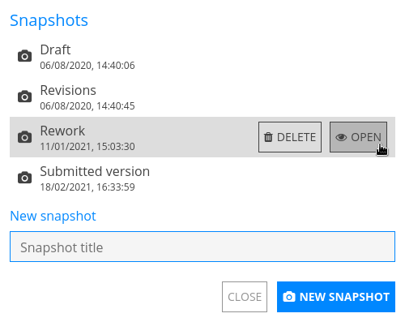

Общая информация#
Новый документ#
Чтобы создать новый документ:
Из любого места в CryptPad: Ctrl+e.
Из CryptDrive:
Новый на панели инструментов.
Новый в нижней части списка файлов/сетки.
Из документа: Файл > Новый.

Зарегистрированные пользователи
Окно создания документа предлагает несколько параметров при создании новых документов.
Собственный документ: создайте новый документ как владелец. Если документ создан без владельца, этот параметр изменить нельзя.
Краткосрочный документ: укажите дату истечения срока действия, после которой документ будет уничтожен. Этот параметр не может быть изменен после создания документа.
Добавить пароль: Защитите общий доступ к документу с помощью пароля. Этот параметр можно изменить позже в меню Доступ.
Шаблон: Вы можете начать с пустого документа или использовать шаблон в качестве отправной точки.
Примечание
Все шаблоны, сохраненные в CryptDrive или в командах, в которых Вы состоите, отображаются на экране создания. Чтобы сохранить документ как шаблон:
В открытом документе: Файл > Сохранить как шаблон.
либо
В CryptDrive: перетащите документ в папку Шаблоны.
Сохранение#
Изменения в документах сохраняются автоматически. Строка состояния на панели инструментов документа (под заголовком) подтверждает, что изменения сохранены.
Создание копии#
Чтобы дублировать документ:
Из документа: Файл > Создать копию.
Из CryptDrive:
Щелкните правой кнопкой мышина документе > Создать копию.
Примечание
"Создать копию" можно использовать для удаления истории из файла, например, если Вы хотите отредактировать содержимое истории и/или сделать её полностью недоступной.
Предупреждение
Будьте осторожны: важное предостережение при использовании функции «Создать копию» заключается в том, что Вам придётся снова поделиться документом со своими контактами или людьми, которым Вы отправляли ссылку на документ.
История документа#

Панель инструментов истории#
История изменений документов сохраняется и при необходимости может быть восстановлена. Чтобы просмотреть и восстановить историю документа:
Файл > История.
Используйте стрелки для навигации:
и между каждым редактированием.
и между каждым автором.
и между каждым сеансом редактирования (когда к документу подключалась одна и та же группа авторов).
Восстановите отображаемую версию с помощью Восстановить или закройте историю без восстановления с помощью Закрыть.
Для экономии места историю можно удалить в свойствах документа Владельцы документа
Примечание
Функциональность истории работает немного иначе в приложении Таблица из-за интеграции OnlyOffice с зашифрованной совместной работой CryptPad в реальном времени. Дополнительные сведения см. в разделе история электронных таблиц.
Ссылки на версии
Чтобы поделиться ссылкой на отображаемую версию истории:
Поделиться на панели инструментов.
Выберите Контакты, Ссылка или Встроить, как и при совместном использовании документа.
Получатели смогут просматривать выбранную версию в режиме только для чтения.
Предупреждение
Совместное использование ссылки на версию также дает доступ только для чтения ко всем версиям документа.
Создание снимка из истории
Чтобы создать снимок из отображаемой версии истории:
кнопка на панели инструментов.
В диалоговом окне укажите имя снимка.
Новый снимок
Снимки#

Диалоговое окно снимков#
Снимки - это определенные моменты в истории изменений документа, именованные для удобства использования.
Чтобы создать снимок текущего состояния документа:
Файл > Снимки
В диалоговом окне укажите имя снимка.
Новый снимок
Чтобы создать снимок из версии в истории документа, см. выше снимок из истории.
Чтобы просмотреть и восстановить снимок:
Файл > Снимки
В диалоговом окне
Щелкнитепо снимку в списке и Вид.Снимок откроется в новом окне.
Восстановить или Закрыть
Чтобы удалить снимок:
Файл > Снимки
В диалоговом окне
Щелкнитеснимок в списке и Удалить.
Свойства#

Чтобы получить доступ к меню свойств:
Из документа: Файл > Свойства.
Из CryptDrive:
Щелкните правой кнопкой мышипо документу > Свойства.
Доступные данные:
Идентификатор документа, которым следует поделиться с администраторами экземпляра в случае возникновения проблем. (обратите внимание, что это не раскрывает содержание документа).
Ссылки для редактирования и просмотра (в зависимости от Ваших прав).
Даты создания и последнего доступа.
Размер.
Размер документа показывает пропорции, используемые для содержимого и для истории. Чтобы сэкономить место для хранения, удалите историю документа с помощью Удалить историю и подтвердите. Владельцы документа
Предупреждение
Снимки являются частью истории документа. Если Вы удалите историю в свойствах документа, снимки также будут удалены.
Пользователи и чат#
Взаимодействие с пользователями, подключенными к тому же документу, через список пользователей и Чат.
Чтобы показать/скрыть эти панели:
для списка пользователей.
Чат для чата.